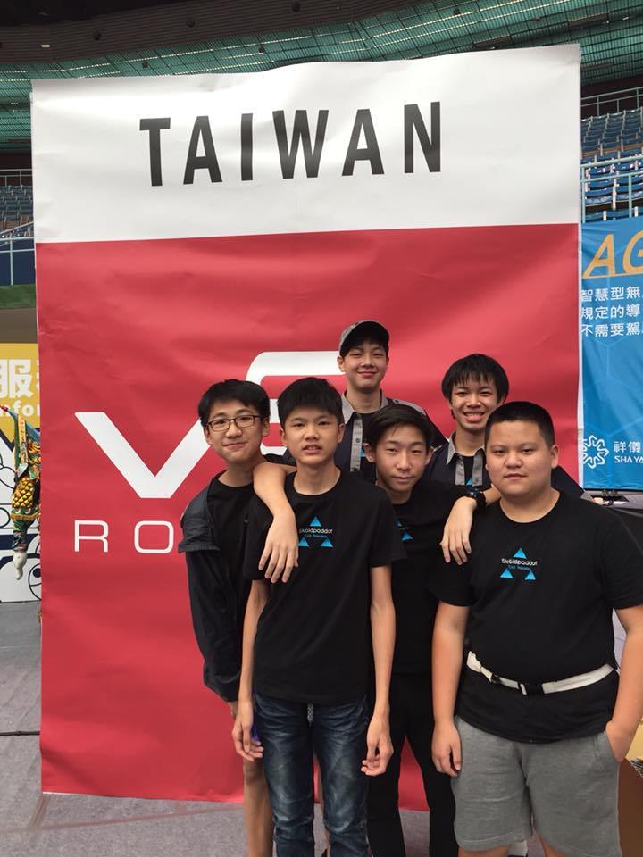

Sköldpaddor Robotics Team is a Taiwanese international innovative and high end designer brand. Mainly focusing on VEX robotics. Additionally, the Sköldpaddor team is part of the Raid Zero Taipei American School Robotics team with a FRC group and a VEX group.
Team members:
William Hou
Hardware Engineer 1
Backup Driver
Charles Lo
Group Orginizer
Hardware Engineer 2
Main Driver
Maintenence 2
Software Engineer (in training)
Glenn Li
Software Engineer 1
Robot Tester
Tsanglu Wu
Aluminum Specialist
Maintenace 3
Food provider
Tool man
Eric Lin
Journalist
Tournament Scout
Darren Tsang
Maintenace 1
Tournament Scout
Hardware Engineer 3
In Training members
Clarence Lin
Hardware Engineer (In training)
Enoch Toh
Journalist (In training)
Main Team Photo

Back row (from right to left), Charles Lo, Darren Tsang, Eric Lin
Front row (fom right to left), Tsanglu Wu, Glenn Li, and William Hou